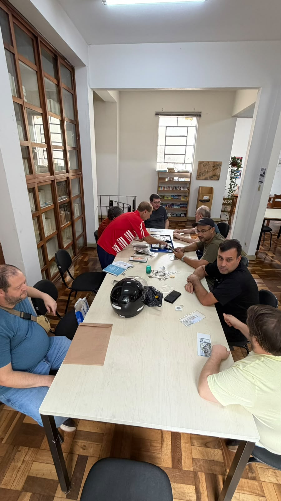
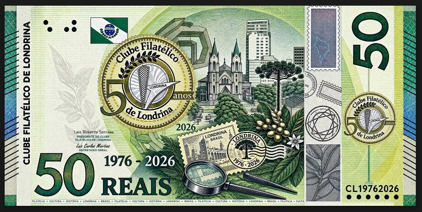
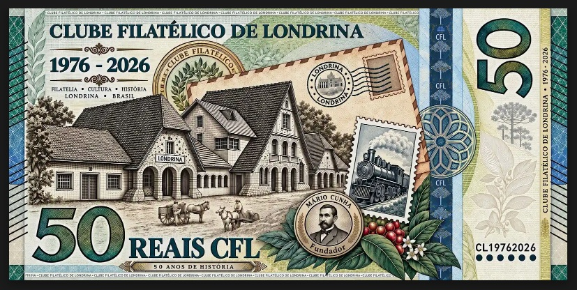
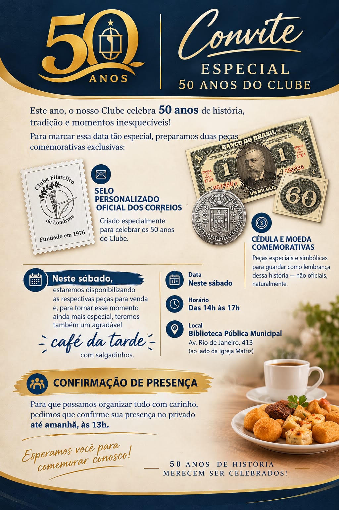

CLUBE FILÁTICO DE LONDRINA/PR COMERCIALIZADOU DUAS PEÇAS REFERENTES AOS 50 ANOS DA ENTIDADE.
Autor: Juliano Zanoni

Membros presentes na reunião do dia 10 de outubro de 2026.
SELO COMEMORATIVO DOS 50 ANOS DA ENTIDADE.

Esta folha de selo personalizado emitida em parceria com os Correios celebra o Jubileu de Ouro (50 anos: 1976–2026) do Clube Filatélico de Londrina. A peça combina a marca oficial do evento com a estrutura clássica de um bloco/folha filatélica. Para o evento realizado no dia 10 de outubro de 2026 a entidade inicialmente produziu sete folhas contendo 12 selos em cada folha.
1. Estrutura e Composição da Folha
A folha é composta por duas seções principais sobre um fundo amarelo:
A) Imagem de Destaque / Vignette Superior
- Ampliação do Selo: Na parte superior da folha, destaca-se a reprodução em tamanho ampliado do design central do selo comemorativo, simulando a borda denteada (picotada) característica da filatelia sobre um fundo em tom dourado/oliva;
- Identificação Oficial: Na margem superior da folha encontram-se a logomarca e inscrições dos Correios / Brasil e da FEBRAF (Federação Brasileira de Filatelia), atestando o caráter oficial da emissão personalizada;
- Código de Barras e Registro: Localizado no canto superior esquerdo, utilizado para controle e autenticidade da emissão técnica dos Correios.
B) Bloco Comercial de Selos (Grade 3x4):
- Quantidade: A parte inferior contém uma grade com 12 selos destacados e picotados (3 linhas por 4 colunas);
- Cabeçalho de cada Selo: Cada um dos 12 selos possui o logotipo dos Correios, a indicação do país (Brasil) e o valor/categoria postal no canto superior direito.
2. Elementos da Marca dos 50 Anos (Vinheta Central):
A estampa contida no centro de cada selo e no destaque ampliado carrega forte simbologia filatélica e local:
- Logotipo "50 anos": O numeral 50 aparece estilizado em destaque, com a palavra "anos" inserida em uma faixa horizontal vermelha à direita e "de Londrina" na curva inferior do círculo;
- Identificação do Clube: A inscrição "Clube Filatélico" contorna o topo do medalhão circular;
- Torre do Relógio / Calçadão de Londrina: Ao centro da esfera, encontra-se a ilustração estilizada da antiga Torre do Relógio do Calçadão de Londrina, um dos marcos urbanísticos mais icônicos da cidade;
- Ramo de Louros: Acima da torre, ramos de louro em tom escuro simbolizam o jubileu, a vitória e a longevidade das cinco décadas de atividades da entidade (1976–2026);
Efeito Denteado: O fundo dourado/oliva possui o formato denteado, remetendo diretamente ao contorno de um selo postal tradicional.
3. Significado para a Filatelia e para Londrina
- Preservação da Memória: A emissão de selos personalizados por clubes filatélicos é uma tradição para registrar efemérides e perpetuar a história das associações de colecionadores;
- Homenagem à Cidade: Ao incluir o símbolo do Calçadão e o nome da cidade, o Clube Filatélico de Londrina reforça seu compromisso com a valorização do patrimônio histórico e cultural do município ao longo de seus 50 anos de existência.
CÉDULA COMEMORATIVA DOS 50 ANOS DA ENTIDADE.


Esta peça comemorativa em formato de cédula celebra o Jubileu de Ouro (50 Anos: 1976 – 2026) do Clube Filatélico de Londrina. O design combina a estética das cédulas monetárias brasileiras com símbolos marcantes da história, da arquitetura e da economia de Londrina, além de referências ao universo da filatelia. Para o evento realizado no dia 10 de outubro de 2026 a entidade inicialmente produziu 60 unidades de cédulas.
1. Anverso (Frente da Cédula)
O anverso reúne ícones urbanos, símbolos oficiais e instrumentos de pesquisa e coleção:
Elementos Visuais e Arquitetura
- Catedral Metropolitana de Londrina (Catedral Basílica Menor Sagrado Coração de Jesus): Localizada ao centro, com suas linhas arquitetônicas em estilo moderno e formato que remete a uma tenda ou acampamento (alusão aos pioneiros);
- Skyline Urbano e Prédios Históricos: Ao fundo da Catedral, sobressai o progresso vertical da "Capital do Café";
- Monumento "O Passageiro" / Calçadão: A escultura modernista (situada no centro de Londrina) é representada no topo central;
- Araucária (Araucaria angustifolia): A árvore símbolo do estado do Paraná aparece em destaque ao lado dos edifícios.
Economia e Riqueza Histórica
Ramo de Café com Frutos e Flores: O café foi o grande motor do povoamento e desenvolvimento econômico de Londrina e do Norte do Paraná a partir da década de 1930.
Símbolos Filatélicos e Técnicos
Lente de Aumento (Lupa) e Selos Postais: Na parte inferior, uma lupa examina selos comemorativos:
- Um dos selos traz a Catedral de Londrina com a inscrição "LONDRINA BRASIL".
- O carimbo postal comemorativo apresenta a Araucária com as datas 1976 - 2026.
Marca D'água e Elementos de Segurança:
- Bandeira do Estado do Paraná no canto superior esquerdo;
- Inscrições em Braille para acessibilidade;
- Selo Dourado comemorativo com a inscrição "Clube Filatélico de Londrina - 50 anos" e a ilustração da antiga Torre do Calçadão/Relógio;
- Selo lateral com a rosa dos ventos / rosácea e número de série CL19762026;
- Assinaturas e Diretores: Traz o nome e cargo de Luiz Roberto Serrano (Presidente do Clube Filatélico de Londrina) e Luiz Carlos Martins (Secretário Geral).
2. Reverso (Verso da Cédula)
O reverso é focado nas origens do transporte, na colonização e na fundação do clube:
História do Transporte e Povoamento
- Estação Ferroviária de Londrina: Representação detalhada da histórica estação de trem (hoje sede do Museu Histórico de Londrina). A chegada da ferrovia nos anos 1930/1940 foi determinante para o escoamento do café e para a atração de imigrantes e migrantes de todo o país;
- Carroça com Tração Animal e Trabalhadores: À frente da estação, colonos e carroceiros simbolizam o trabalho rural e o transporte rudimentar do início da colonização pela Companhia de Terras Norte do Paraná;
- Locomotiva a Vapor ("Maria Fumaça"): Ilustrada dentro do selo postal no canto direito, homenageando o modal ferroviário que conectava Londrina a São Paulo e ao porto de Santos.
Homenagem e Símbolos do Clube:
- Medalhão de Mário Cunha (Fundador): Retrato do fundador do Clube Filatélico de Londrina;
- Ramo de Café em Flor e Fruto: Guarnece o medalhão do fundador, reafirmando o laço entre a filatelia e a identidade cafeeira local;
- Carimbo Postal Histórico: Carimbo circular com a fachada da antiga prefeitura/prédio histórico e as linhas postais;
- Banda Holográfica / Faixa de Segurança: Faixa azul vertical com a sigla CFL (Clube Filatélico de Londrina) e rosácea decorativa;
- Selo Dourado Superior: Logotipo oficial do Clube Filatélico cercado por ramos de louros.
CONVITE ESPECIAL 50 ANOS DO CLUBE.

Este ano, o nosso Clube celebra 50 anos de história, tradição e momentos inesquecíveis!
Para marcar essa data tão especial, preparamos duas peças comemorativas exclusivas:
SELO PERSONALIZADO OFICIAL DOS CORREIOS.
Criado especialmente para celebrar os 50 anos do Clube.
(Texto no selo: Clube Filatélico de Londrina - Fundado em 1976)
CÉDULA COMEMORATIVAS.
Peças especiais e simbólicas para guardar como lembrança dessa história — não oficiais, naturalmente.
Neste sábado, estaremos disponibilizando as respectivas peças para venda e, para tornar esse momento ainda mais especial, teremos também um agradável café da tarde com salgadinhos.
Data: Neste sábado.
Horário: Das 14h às 17h.
Local: Biblioteca Pública Municipal.
Av. Rio de Janeiro, 413 (ao lado da Igreja Matriz).
CONFIRMAÇÃO DE PRESENÇA.
Para que possamos organizar tudo com carinho, pedimos que confirme sua presença no privado até amanhã, às 13h.
Esperamos você para comemorar conosco!
50 ANOS DE HISTÓRIA MERECEM SER CELEBRADOS!
O CLUBE FILATÉLICO DE LONDRINA lança em 2026, o selo personalisado dos 50 anos da entidade.

Imagem alusiva do selo de 50 anos do CLUBE FILATÉLICO DE LONDRINA
Os interessados a comprar o exemplar devem procuar diretamente o CLUBE FILATÉLICO DE LONDRINA.
A Evolução da Moeda em Destaque: "História do Dinheiro - Do Ouro ao Bitcoin"
A FILACAP, em sua edição especial de 2026 (Ano 52, nº 217A), apresenta uma obra indispensável para entusiastas e colecionadores: "História do Dinheiro: Do Ouro ao Bitcoin", de autoria de Rafael Augusto de Mattos Ferreira. Este material propõe uma jornada profunda pela evolução numismática e monetária, conectando o passado clássico às inovações digitais contemporâneas.
Conteúdo e Abordagem Numismática
O guia foi estruturado para oferecer uma visão abrangente sobre como o valor foi representado ao longo dos séculos:
- Das Origens ao Metal: A obra explora desde as primeiras formas de escambo nas antigas civilizações até o surgimento das moedas metálicas.
- Períodos Históricos: O material inclui seções detalhadas sobre as denominações romanas (como o Denário e o Sestércio), a produção de moedas na Idade Média e a evolução monetária no Século XX.
- Brasil e Crises Econômicas: Apresenta a trajetória monetária do Brasil, abordando momentos críticos como as crises inflacionárias e mudanças de padrão monetário.
- Modernidade: Finaliza com os modernos sistemas de pagamentos digitais e a ascensão do Bitcoin.
Um Guia para o Colecionador
Além do valor histórico, o livro serve como um guia introdutório prático. Ele é ricamente ilustrado, facilitando a identificação de peças e o entendimento de conceitos fundamentais para quem deseja iniciar ou aprimorar uma coleção de moedas e cédulas.
Como Adquirir
O exemplar especial pode ser adquirido individualmente por R$ 25,00 + frete. Há também a opção de associação à Filacap por uma anuidade de R$ 50,00, que garante o recebimento deste especial e de mais três edições ao longo do ano.
Contatos para aquisição:
Autor (Rafael Augusto): (35) 98806-0365.
Filacap: ac.filacap@gmail.com ou pelo contato de Maurício (12) 99151-3659.
Calendário Nacional de Numismática e Multicolecionismo 2026
O ano de 2026 apresenta uma agenda intensa para colecionadores de moedas, cédulas e medalhas em todo o Brasil. Abaixo, os eventos estão organizados de forma cronológica, especificando datas, locais e as entidades organizadoras.
Primeiro Semestre: Encontros Regionais
Janeiro: 29, 30 e 31 | Rio de Janeiro - RJ: Encontro de Colecionadores. | 30, 31 Jan e 01 Fev | Maceió - AL: Grupo de Multicolecionismo Alagoano.
Fevereiro: 27, 28 Fev e 01 Mar | Piracicaba - SP: Encontro de Colecionadores.
Março: 07 | Joinville - SC: XX Encontro de Joinville | 07 e 08 | Porto Alegre - RS | 13 e 14 | Brasília - DF | 13 e 14 | Canoas - RS | 21 e 22 | Bauru - SP | 27 e 28 | São Paulo - SP.
Abril: 10, 11 e 12 | Botucatu - SP | 17 e 18 | Curitiba - PR | 18, 19, 20 e 21 | Serra Negra - SP | 24, 25 e 26 | Campinas - SP | 30 Abr a 03 Mai | João Pessoa - PB.
Maio: 07, 08 e 09 | Belo Horizonte - MG | 15 e 16 | Goiânia - GO | 15, 16 e 17 | Igrejinha - RS | 22, 23 e 24 | Sorocaba - SP | 29, 30 e 31 | Vitória - ES.
Junho: 06 e 07 | Guaratinguetá - SP | 11, 12 e 13 | São Paulo - SP | 19 e 20 | Timbó - SC.
Segundo Semestre: Grandes Congressos e Feiras
Julho: 03, 04 e 05 | João Pessoa - PB | 10, 11 e 12 | Presidente Prudente - SP | 17, 18 e 19 | Itu - SP.
Agosto: 01 e 02 | Florianópolis - SC | 14, 15 e 16 | Ribeirão Preto - SP | 21, 22 e 23 | Bauru - SP.
Setembro: 04 a 07 | Serra Negra - SP | 11 e 12 | São Paulo - SP | 11, 12 e 13 | Botucatu - SP | 18 e 19 | Joinville - SC | 25 e 26 | Juiz de Fora - MG | 25, 26 e 27 | Campinas - SP.
Outubro: 08, 09 e 10 | Manaus - AM | 16, 17 e 18 | Piracicaba - SP | 23 e 24 | Curitiba - PR | 30 e 31 | Uberlândia - MG.
Novembro: 06 e 07 | Brasília - DF | 13 e 14 | Caxias - RS | 14 e 15 | Pomerode - SC | 26, 27 e 28 | Belo Horizonte - MG.
Dezembro: 04, 05 e 06 | João Pessoa - PB e Campo Grande - MS | 10, 11 e 12 | XXX Congresso Brasileiro de Numismática SNB - São Paulo - SP.
Exposição de cartões postais revela o olhar de uma Londrina eternizada em 2024.
Com postais do colecionador Luiz Carlos Martins e retratos da fotógrafa Mirian Costa, a mostra promovida pelo Clube Filatélico acontecerá na Biblioteca Pública, entre 07 de novembro a 27 de dezembro.
A partir do reconhecimento da importância artística e histórica dos cartões postais, o Clube Filatélico de Londrina vai promover, no hall de entrada da Biblioteca Pública (Av. Rio de Janeiro, 413, Centro), a exposição “Do Passado ao Presente – Prédios Eternizados em Postais”. Na mostra será exibido o acervo de postais do colecionador Luiz Carlos Martins e postais recentes produzidos pela fotógrafa Mirian Costa. A visita é gratuita e pode ser feita de segunda a sexta-feira, das 7h30 às 18h.
Durante os 90 anos de sua existência, Londrina passou por diversas faces. Desta forma, os cartões postais vêm como registros destas mudanças, oferecendo contribuições importantes para a construção da memória, da identidade social e da noção de patrimônio cultural local.
Fonte:
BARIONI, Manu. Exposição de cartões postais revela o olhar de uma Londrina eternizada. Disponível em: https://jornaluniao.com.br/noticias/cultura/exposicao-de-cartoes-postais-revela-o-olhar-de-uma-londrina-eternizada. Acessado em: 01 mar 2026.
A arte de colecionar.

Colecionador entrevistado: Luiz Carlos Martins.

Colecionador entrevistado: Dionisio Borsato.
"O CLUBE FILATÉLICO DE LONDRINA - associação londrinense voltada ao colecionismo, especialmente à numismática e filatelia - está promovendo uma mostra filatérica com a coleção temática de selos 'Livro e Literatura'. Criado em 1976, o clube é uma comprovação de que a atividade continua firme, apesar das inovações tecnológicas."
"Dionisio Borsato, colecionador de cédulas e moedas, ressalta que a atividade vai muito além de um hobby, buscando identificar e situar as moedas no tempo histórico. No entanto, a fabricação tende a se tornar cada vez mais rara com o uso do cartão de crédito e compras online."
Fonte:
SOUZA, Daneli. A arte de colecionar. Disponível em: https://www.folhadelondrina.com.br/folha-2/a-arte-de-colecionar-982256.html. Acessado em: 10 de mar 2026.
Coleção de selos resiste à era virtual: Em plena era das mensagens via internet, grupo de bancários alimenta paixão pela filatelia.

Colecionador entrevistado: Luiz Carlos Martins

Colecionador entrevistado: Nelson Lindolfo Porto Campos
No momento em que a maioria da população mundial se relaciona através da troca instantânea de mensagens eletrônicas, a filatelia resiste em meio a tanta tecnologia. Em Londrina, um grupo de bancários ativos e aposentados se reúne mensalmente com outros adeptos desta prática iniciada há mais de 200 anos para conferir as novidades.
O Clube de Filatelia de Londrina tem cerca de 30 membros fixos, que fazem reuniões mensais na Biblioteca Pública Municipal. Na esteira da filatelia, Luiz Carlos Martins também passou a se dedicar à numismática e à telecartofilia.
Fonte:
BARÃO, Vera. Coleção de selos resiste à era virtual. Vida Bancária em Revista: p 18-19, mar 2015.
Memória Filatélica: O Pantanal no Selo do CLUBE FILATÉLICO DE LONDRINA (2010).

Em 2010, o CLUBE FILATÉLICO DE LONDRINA (CFL) lançou uma folha de selos personalizados que se destaca pelo apuro visual e pela temática ecológica, alternando vinhetas comemorativas do clube e imagens da fauna e flora do Pantanal (Onça-Pintada, Arara-Azul-Grande, Jacaré, Ipê-Rosa e Vitória-Régia).
Selos personalizados como este possuem um valor especial para colecionadores e servem como registro de que a filatelia londrinense permanece ativa e conectada com a preservação de nossos biomas.
As coleções de seo Campos.

"Os jovens de hoje não têm o micróbio que estimula a coleção". É nesse tom de brincadeira que o aposentado Nelson Lindolfo Porto Campos, colecionador há 50 anos, comenta sobre seu vasto acervo que inclui moedas, selos, relógios de corda, fotos de Londrina, caixas de fósforo, postais japoneses, conchas, chaveiros e cartões telefônicos.
Fonte:
BORGES, Fernanda. As coleções de seo Campos: à caça a pequenos tesouros. Folha de Londrina: página 11, 25 de dezembro de 2005.
Arapongas sedia encontro regional de colecionadores.

O aposentado Nelson Campos mostrou parte de sua coleção de moedas.

Gean Carlos Cereia, coordenador do evento.
Desde cédulas emitidas durante a Revolução Francesa a caixas de fósforo japonesas da década de 50 e cartões telefônicos estiveram expostos no 4º Encontro Regional de Colecionadores de Arapongas, promovido no hall da Biblioteca Pública.
Fonte:
PINHEIRO, LEIDI. Diário do Paraná: 14 nov 1999.
Mario Cunha e seu legado à filatelia londrinense e paranaense.
Mário Cunha foi uma figura central e emblemática da filatelia em Londrina. Como jornalista filatélico, manteve espaços na Folha de Londrina que eram verdadeiras aulas de história e geografia. Foi um dos pilares do movimento associativo do Clube Filatélico de Londrina nas décadas de 80 e 90.
Quais foram os fundadores do CLUBE FILATÉLICO DE LONDRINA?
O clube foi oficialmente fundado em 07 de março de 1976. Entre os nomes historicamente ligados à liderança e fundação destacam-se: Afonso José de Carvalho, Wilson de Oliveira e José Carlos de Paula, que viam no selo e na numismática documentos históricos fundamentais para a preservação cultural da região.
A Filatelia em Londrina.
Londrina perpetuou sua pujança com selos emitidos pelo Correio, como o do Jubileu de Prata (1959) e o do Colhedor de Rami (1979), que correu o mundo representando a realidade econômica do município. Homens dedicados como J. J. Puls e Mário Cunha foram essenciais para consolidar essa trajetória de destaque internacional.

Imagem ilustrativa do selo ordinário denominado "colhedor de rami".
Fonte:
BRANCO, Gustavo; LOPES, Pedro. A Filatelia em Londrina. Londrina: Ministério do Trabalho, Indústria e Comércio.
Exemplares do selo do jubileu de Londrina/Pr no acervo da biblioteca pública municipal.
Consulte o link abaixo para visualizar as peças acervadas:
https://online.fliphtml5.com/lusnq/guzc/
A história do selo de jubileu de Londrina/Pr.

O selo mais emblemático e colecionado é o de 27 de setembro de 1959, criado para celebrar o Jubileu de Prata (25 anos de emancipação). Ele apresenta o Obelisco, o mapa do município, o trigo e o café, simbolizando a fase em que Londrina se tornou a Capital Mundial do Café.